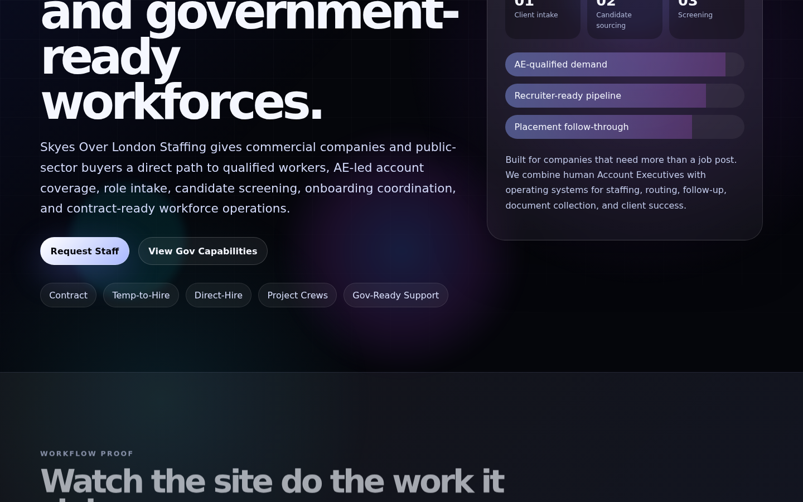
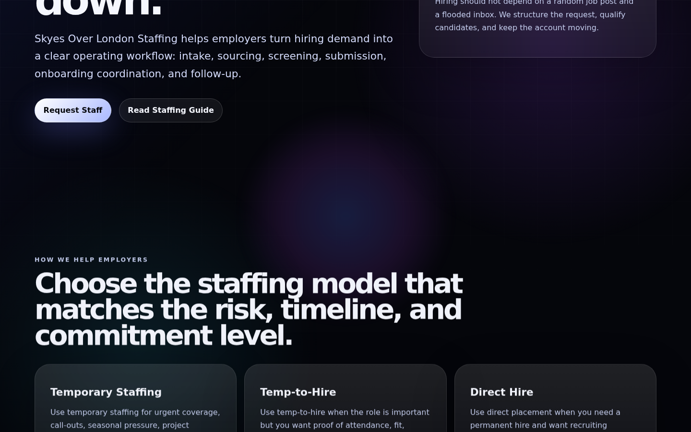
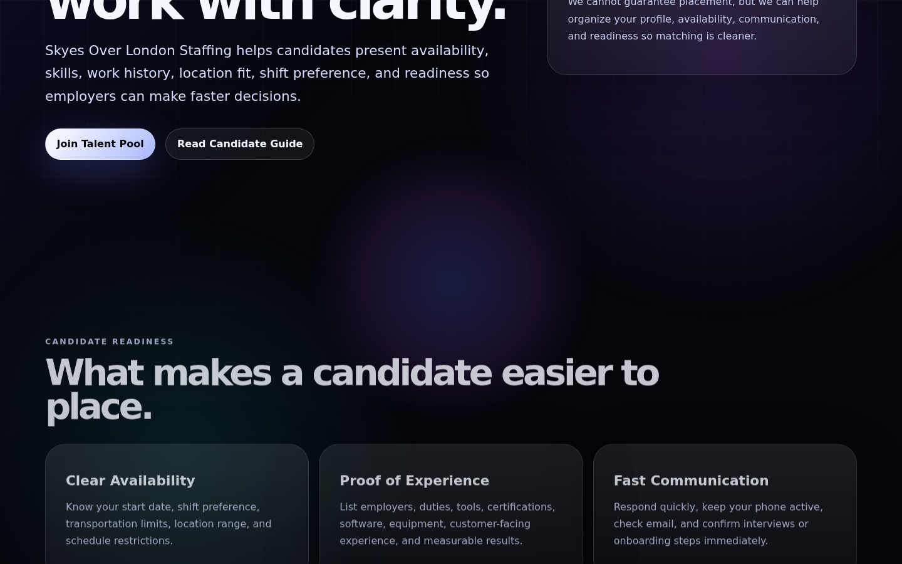
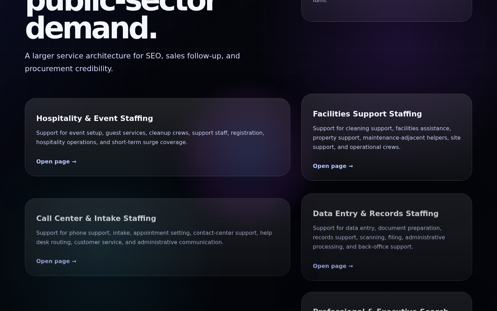
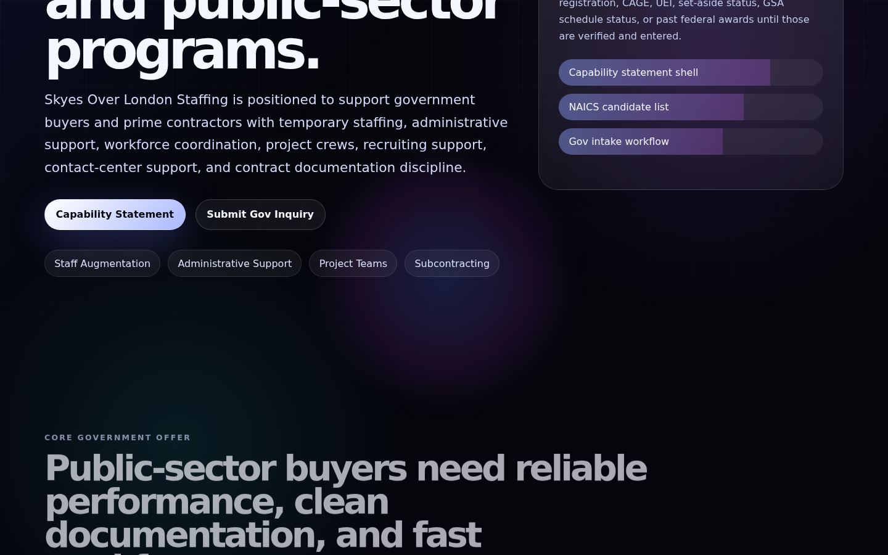
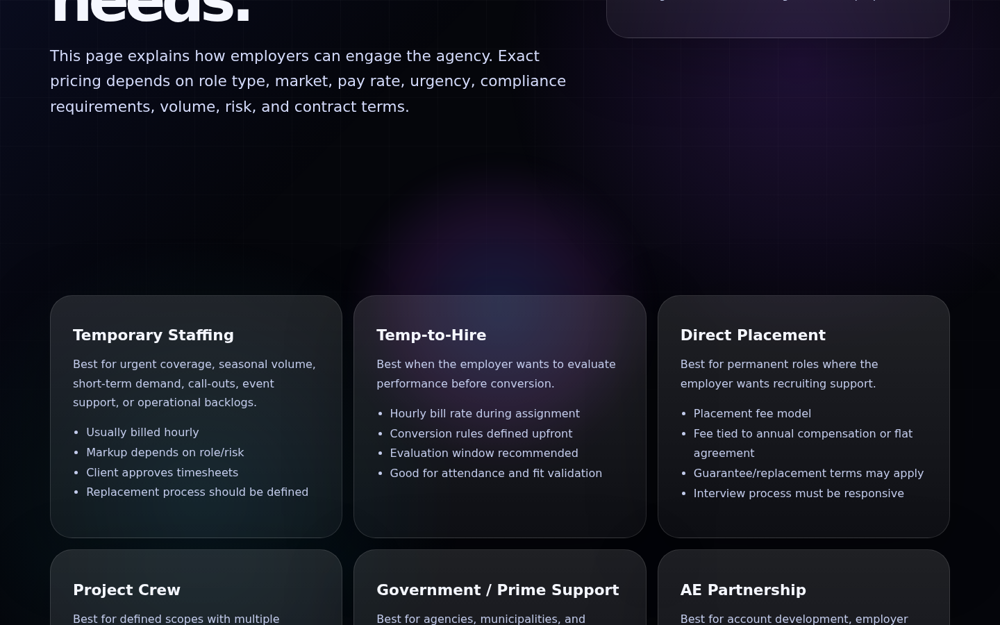

Staffing front door
I use the public side to make employer, candidate, service, city, pricing, job, government, and intake routes legible before the work enters the command room.
Open public surfacePlatform Map
I built SOL Staffing OS so buyer pages, candidate routes, government-safe material, Skyegate FS27 gates, protected records, upload vault, proof receipts, and the private brain route do not live in separate piles.
I use the public side to make employer, candidate, service, city, pricing, job, government, and intake routes legible before the work enters the command room.
Open public surfaceWe route live work through authenticated records, manual entries, summaries, secure uploads, operator gates, and proof receipts.
Open admin surfaceI keep browser guidance available while the private Ollama/GPU brain route waits behind the right endpoint and gate configuration.
Open brain surfaceBacklinked Surfaces
The map below links the public buyer path to the protected operator path so the page proves the architecture instead of just describing it.
These pages stay public because they create trust, collect clean facts, and give the staffing company a real external surface.
These surfaces belong behind gates or operator review because they handle records, uploads, administrative visibility, and brain support.
Long Proof Ledger
This is actual SOL Staffing system proof, not a replay of this marketing page. The reel starts with the live staffing front door routes, then shows the operating workflow moving from intake into authenticated admin, records, upload vault, and brain support.

01 Public homepage
02 Employer route
03 Candidate route
04 Services route
05 Government route
06 Pricing routeRoute captures exist for homepage, employers, candidates, services, government, and pricing.
The workflow manifest records employer intake submission through the staffing-submit handler.
The proof path opens Skyegate FS27 auth and routes into the authenticated dashboard.
The proof path stores an authenticated file through the staffing-files function.
The private route responds with a configuration guardrail while the local SOL brain answers the workflow prompt.
The GPU/Ollama endpoint still needs private production model infrastructure before a buyer uses it live.
What was proven
Employer and candidate forms were submitted through the real backend handler, then surfaced in the authenticated admin summary with records and audit counts.
{kind=link}
{kind=link}
{kind=link}
{kind=link}
{kind=link}
{kind=link}